B e n j a m i n D u c a u
H e l l o ! I' m
Mes projets en cours
Mes projets réalisés
-
The Arena01
Formation en distanciel sur les fondamentaux du génie logiciel : janvier - mai 2023Formation intensive de The Arena Project pour apprendre les fondamentaux du génie logiciel, inspirée des méthodes de l'École 42, afin d'avoir des bases communes à différents langages même si la formation utilise les langages JavaScript - Typescript - NodeJS. Le niveau de difficulté est élevé, tout ce qui n'est pas autorisé est par défaut interdit. Par exemple seule l'usage de la boucle while est autorisée, les autres sont interdites.
Je suis à l'heure actuelle le dernier et seulement le 17ème à avoir réussi à aller au bout du cursus (sur des milliers d'inscrits), ce qui vous donne un aperçu du niveau de résilience qu'il faut avoir ainsi que du niveau de difficulté de la formation.
Voici les étapes franchies :
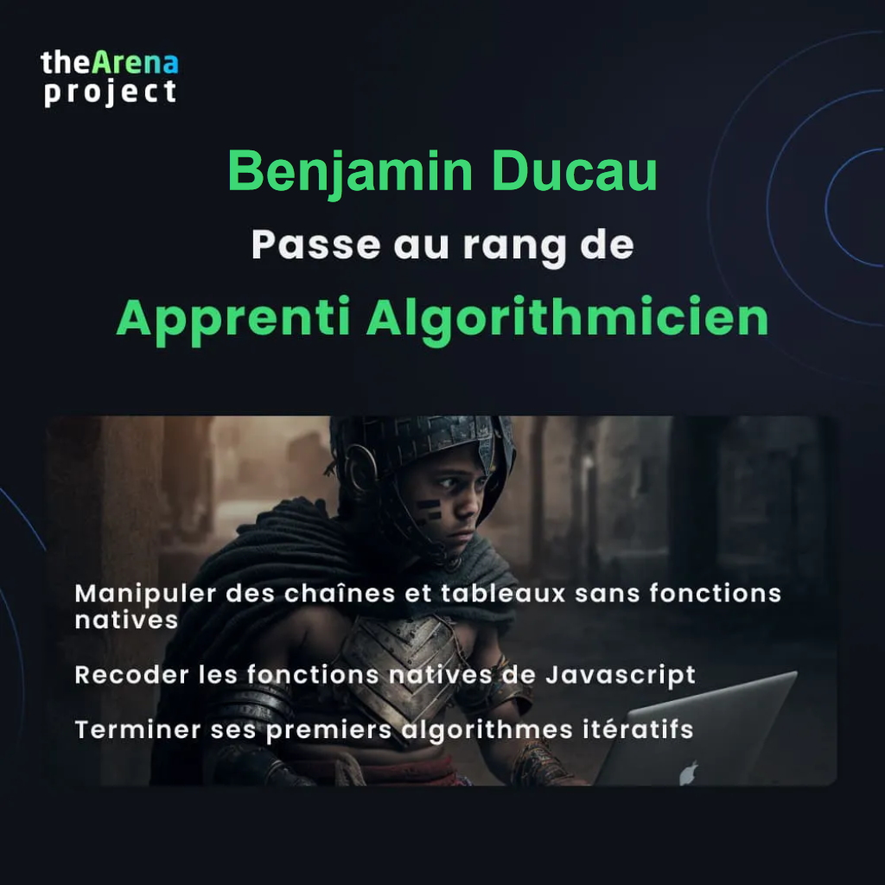 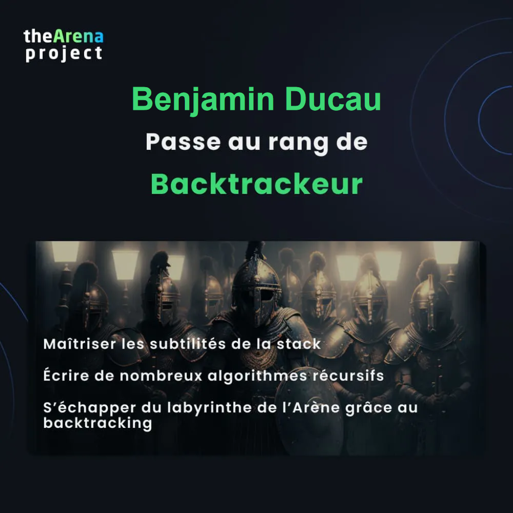 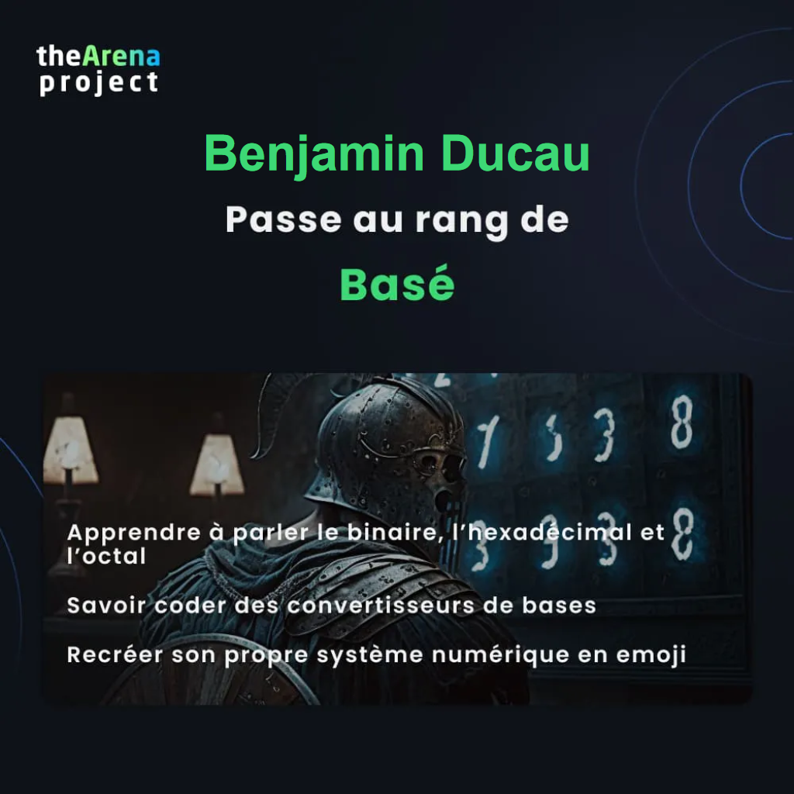 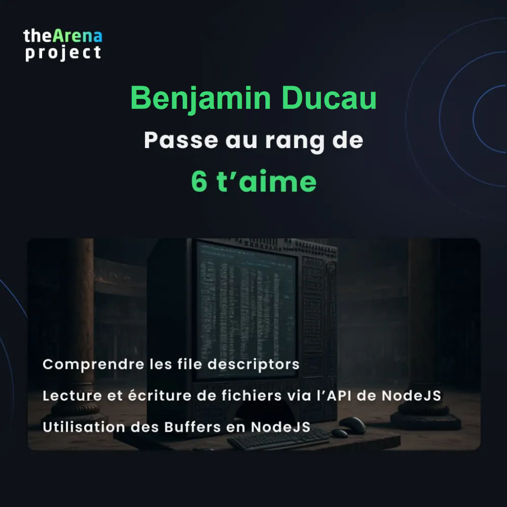 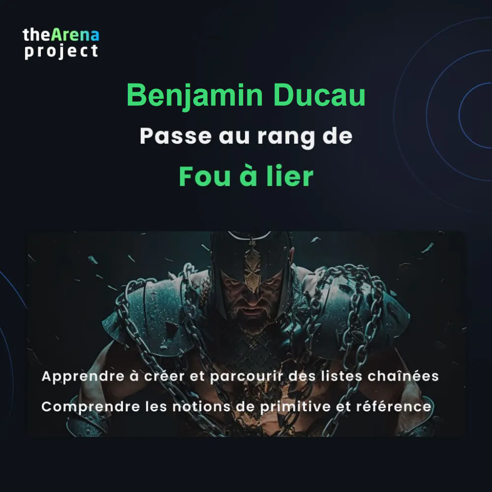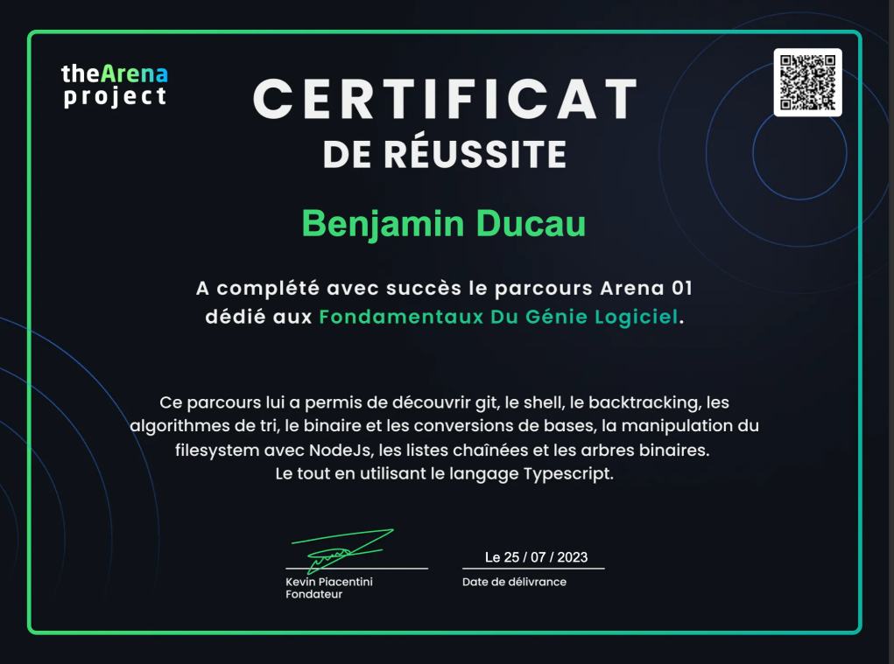Les technos utilisées :


-
MoneyThunes
Projet collaboratif : mai-novembre 2022Suite au lancement d'un challenge, j'ai été choisi par BeSwarm pour intégrer une équipe avec 3 autres développeurs, afin de réaliser la partie front-end d'une application de gestion de comptes bancaires. Avec une particularité : l'utilisateur doit être authentifié via son compte BeSwarm pour pouvoir avoir accès à l'application, via un protocole Oauth2.
Ainsi nous avions donc de fourni : les routes API via un fichier Swagger, un accès à un compte pour notre application qui utilise leur base de donnée. À partir de ces éléments là nous avons dû réfléchir, maquetter et mettre en place cette application, le style étant libre. Nous avons donc choisi, ensemble, les technos à utiliser, le mode de fonctionnement, les modes de communication. Utilisation de React avec TailwindCSS pour le style Mise en place des test avec Jest et React testing library Utilisation de GitLab, Git pour le versionning Utilisation de Figma pour les maquettes, Swagger pour les routes API, Oauth2 pour l'authentification, Notion et Jira pour le partage d'infos Mise en place de sessions de pair-programming, de communications asynchrones et de mise au point hebdomadaires
Voici les tâches que j'ai réalisé dans ce projet : Rédaction du cahier des charges Mise en place des tests via Jest et React Testing Library Intégration de composants suivant la maquette Intégration de pages suivant la maquette Maintenance et évolution des fonctionnalités, ainsi que des styles de l'application Enregistrement des avancées et déploiement sur les branches appropriées sur GitLab (merge, merge request et pull request)
Les technos utilisées :

 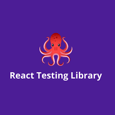
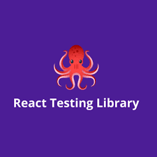


-
StackOverFlou
Réalisation personnelle 2022Modulo Tech m'a chargé de réaliser un forum social from scratch sous React et NodeJS, inspiré d'un célèbre site connu des devs. StackOverFlou a été l'occasion pour moi de refaire le même type de projet full stack que Groupomania mais en utilisant des technos différentes : React et Redux via Redux ToolKit pour la partie front, MongoDb pour la BDD afin de voir la différence avec du Sql sur ce type de projet.
Cela m'a aussi servi en quelque sorte de laboratoire dans ma montée en compétences sur React, tout en implémentant une fonctionnalité que je n'avais pas eu l'occasion de faire sur l'autre projet : un système d'oubli de mot de passe. Projet from scratch Utilisation de create react app Front-end en React, avec Redux via Redux ToolKit Utilisation de styled composants via la libraire styled components Création d'une API Serveur sous NodeJs / ExpressJs / Mongoose et BDD NoSql MongoDB Prise en compte des recommandations de la RGPD et de l'OWASP : cryptage mot de passe, sécurité BDD, token d'indentification via JWT ... Hébergement du site sur un serveur
Les technos utilisées :


-
Find your superhero
Réalisation personnelle 2022Création d'une application web afin de permettre à l'utilisateur de pouvoir rechercher des images de super-héros en tapant son nom en anglais. Application pensée essentiellement pour être utilisée par des enfants, ainsi l'interface a été créée dans le but d'être la plus simple possible.
De ce fait, les fonctionnalités sont simples et vont à l'essentiel, tout en ayant un minimum d'accompagnement, afin que l'utilisateur puisse comprendre ce qu'il doit faire ou ce qu'il se passe.
La base de donnée provient d'une API publique Utilisation de create react app Consommation d'une API publique ou au clic Utilisation de styled composants via la libraire styled components Hébergement du site sur un serveur o2switch
EDIT : l'API publique du site ayant connu des perturbations fin 2022, et devant l'augmentation significative du coût pour le maintenir en ligne, j'ai décidé de ne pas prolonger l'hébergement du site à partir de février 2023. Vous pouvez néanmoins trouver une vidéo de présentation du site (avec son), exposant ce qu'il était possible à un utilisateur de faire lorsqu'il se rendait sur www.findyoursuperhero.com, site qui a donc été disponible pour tous pendant un an.
Cependant, l'appli est utilisable si on l'installe en local sur une machine. J'ai donc fait le nécessaire pour qu'elle soit téléchargeable en libre accès par n'importe quelle personne souhaitant l'utiliser, car je l'ai créée avant tout pour les autres et que cela puisse profiter, si possible, à un maximum d'enfants. Tout est indiqué dans le repo github du projet.
Les technos utilisées :
-
Groupomania
Réalisation from scratch d'un réseau social interne d'entreprise pour la société Groupomania suivant un cahier des charges prédéfini : Base de données sous MySQL Serveur sous NodeJs / Express Front-end en JS avec liberté d'utilisation d'un framework ou non Possibilité de partager des articles et/ou des images, ainsi que de les commenter Mise en place d'un système de modération Prise en compte des recommandations de la RGPD et de l'OWASP : cryptage mot de passe, sécurité BDD, token d'indentification via JWT ...
Les technos utilisées :

 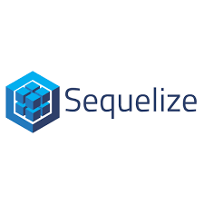
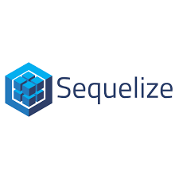

-
Oh My Food
À partir de maquettes mobiles, création de la page d'accueil OhMyFood ainsi que toutes les pages correspondant aux cartes de restaurants, le tout entièrement responsive.
Intégration d'animations comme demandé dans le cahier des charges : Loader pour la page d'accueil Remplissage des coeurs au survol ou au clic Effet d'apparition en décalé des plats à l'ouverture d'une carte Effet de coche apparaissant au survol du plat
Les technos utilisées :


-
So Pekocko
En charge de la partie back-end, j'ai créé une API sécurisée en relation avec une base de donnée MongoDB Atlas : Serveur sous NodeJs / Express Création des routes Mise en place de middlewares et différents packages pour la sécurité (bcrypt, helmet, password validator...) Serveur sous NodeJs / Express Respect des recommandations de la RGPD
Les technos utilisées :
-
La Chouette Agence
Réalisation d'un audit SEO du site La Chouette Agence et création d'un rapport en tenant compte des contraintes d'accessibilité. Optimisation et refonte du code en y apportant 10 améloriations issues du rapport et ce ne modifiant uniquement que les parties HTML et CSS.
Les technos utilisées :
 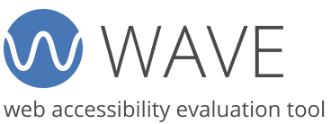
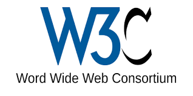
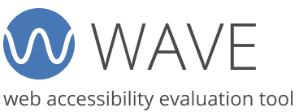
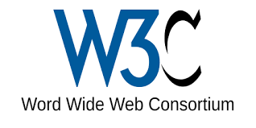

-
Orinoco
Réalisation de la partie front-end du site e-commerce Orinoco en JavaScript Vanilla.
Les technos utilisées :

-
Reservia
À partir de deux maquettes, l'une en version desktop et l'autre en version mobile, création d'une page web entièrement responsive du site Réservia.
Les technos utilisées :
Un atout atypique
Atypique vous avez dit? Effectivement, c'est un mot qui revient souvent pour me décrire, tant au niveau de mon parcours professionnel que de ma personnalité.
En 2005, je démarre ma carrière dans la téléphonie mobile en tant que conseiller commercial. J'ai ensuite découvert l'envers du décor en devenant technicien réparateur SAV, devant aprendre tout en autodidacte et sur le tas. Un parallèle d'ores et déjà amusant avec les aspects back-end et front-end avec ma future destinée de dev 😀.
2019 marque l'année du changement pour moi : c'est à ce moment là que je décide de reprendre ma carrière en main. Après une période d'introspection dans ce moment charnière de ma vie, je décide de changer de voie et de me reconvertir dans un domaine qui me permettrait vraiment de m'épanouir : le développement web !
J'entame ma reconversion fin 2020 en effectuant une formation Développeur Web via OpenClassrooms , ce qui me permet de découvrir le métier dans son ensemble et de réaliser mes premiers projets. Je suis diplômé en août 2021. Conscient que l'apprentissage de ce métier est continu et n'ayant surtout pas envie de rester sur de quelconques acquis, je continue depuis à me former sur de nouvelles technologies en réalisant régulièrement de nouveaux projets.
Ayant toujours aimé le travail en équipe, je privilégie aujourd'hui ce dernier bien que je sois capable de travailler en toute autonomie. Bien que j'ai une appétence plus poussée pour la partie front-end du métier, parce qu'étant notamment sensible à l'expérience utilisateur et au parcours client, l'aspect full-stack du métier, où l'on peut intervenir sur l'ensemble d'un projet, me plait tout autant.
De toute façon je ne considère pas le métier de développeur comme devant faire soit du front, soit du back, soit les deux. C'est un tout qui englobe toutes ces parties, et qui nécessite de savoir comment il fonctionne pour pouvoir répondre aux problématiques de chacune de ses composantes. Mon expérience dans le monde du commerce me permet en plus d'avoir une vision plus large sur le produit et des facilités à l'intégrer plus facilement dans le processus de développement.
Pour ce qui est de ma personnalité souvent décrite comme atypique, il se pourrait que ma façon de penser en dehors des cases ainsi que le fait d'aller au bout de mes choix en soient en partie la cause. Mais si vous souhaitez réellement savoir pourquoi, je vous invite à venir échanger avec moi pour vous faire votre propre idée 😉.
Compétences techniques
Front-end
- React
- JavaScript
- 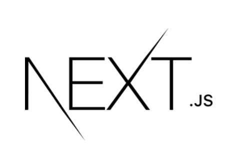NextJS
- VueJS
CSS
- Tailwind CSS
 Boostrap
Boostrap- CSS3
- SASS
Tests
- Jest
- React Testing Library
Back-end
- Express JS
- NodeJS
- MongoDB
- Mongoose
- Mysql
- Sequelize
Outils
 VsCode
VsCode- Git
 GitHub
GitHub- GitLab
- Postman
 Lighthouse
Lighthouse- Wave
- Jira
- Figma
- 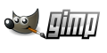Gimp
- W3C